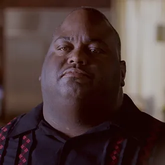

Rólunk

Gustavo Fring vezérigazgató
Üdvözöllek a Los Pollos Hermanosnál! A nevem Gusztáv, de hívhatsz Gusztinak is. Az éttermünkben mindent megteszünk annak érdekében, hogy a legjobb élményt nyújtsuk Önöknek, és a lehető legmagasabb minőségű ételeket és italokat kínáljuk.

Huell a menedzser
Szeretnénk, ha az éttermünk nemcsak egy hely lenne az evésre, hanem egy közösségi tér is, ahol jól érezhetik magukat a vendégeink. Várjuk Önöket szeretettel az éttermünkben!